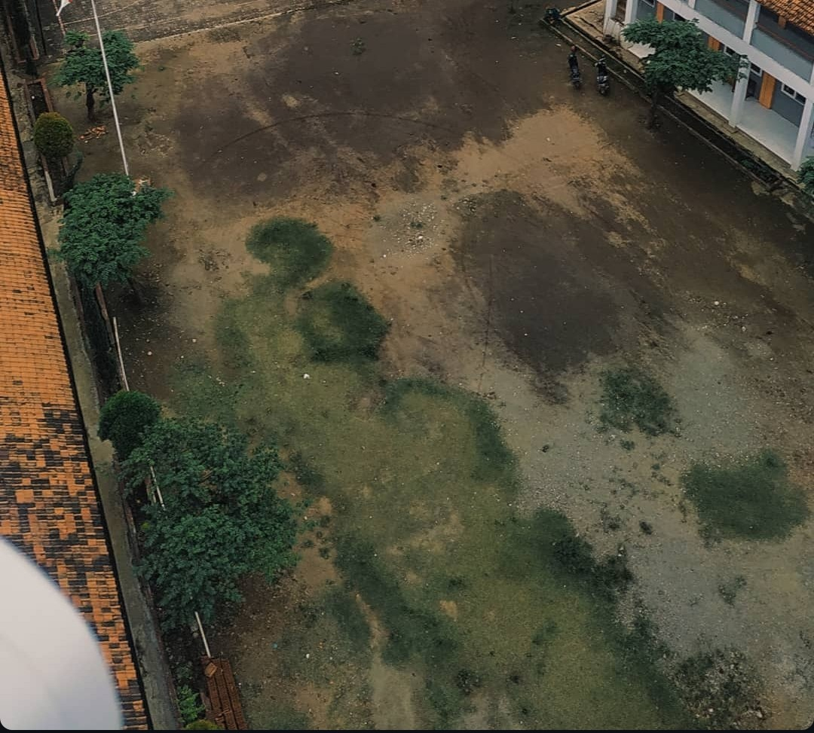
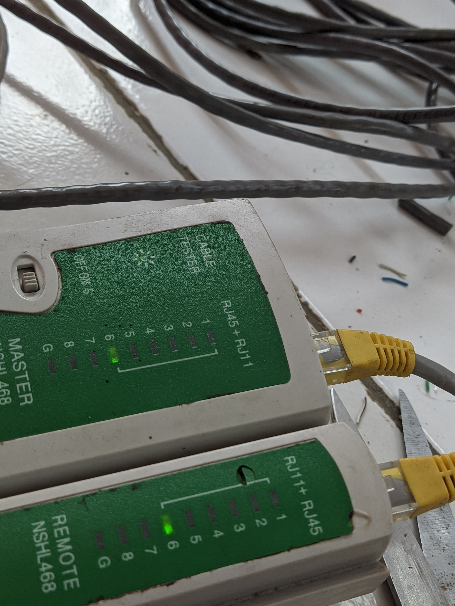

Field Work Practice (PKL) Gallery

Configuring Mikrotik router for internal network management.

Installation and adjustment process of Point-to-Point wireless devices on a Triangle tower.

Network infrastructure designed and implemented for the Computer Lab.